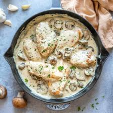

Cream of Mushroom Chicken

Description
This is a rich, creamy, and comforting dish. Tender chicken breasts are simmered
in a savory mushroom sauce made with fresh garlic, cream, and herbs.
It is the perfect quick weeknight dinner that tastes like it came from a fancy restaurant!
Ingredients
- 4 chicken breasts
- 1 can of cream of mushroom soup
- 1 cup of sliced fresh mushrooms
- 2 cloves of garlic, minced
- Salt and pepper to taste
Steps
- Season the chicken breasts with salt and pepper.
- Sear the chicken in a hot skillet for 5 minutes on each side until golden brown.
- Remove chicken, then cook garlic and fresh mushrooms in the same pan.
- Pour in the cream of mushroom soup and bring it to a simmer.
- Return the chicken to the pan, cover, and cook for 10 more minutes.
Back to Home